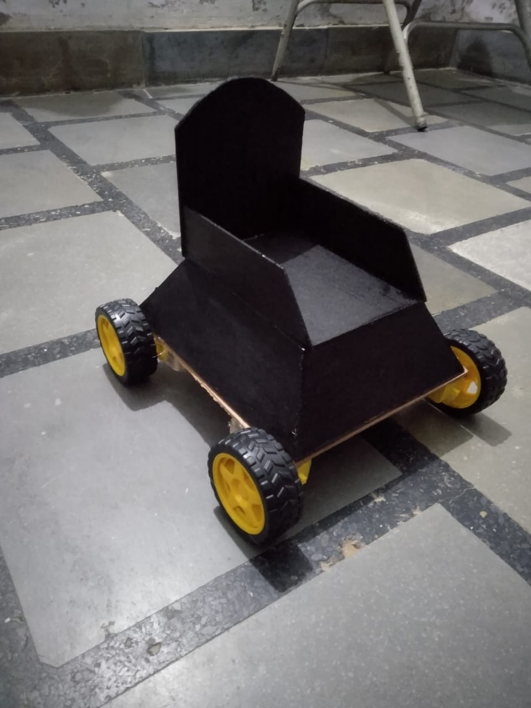
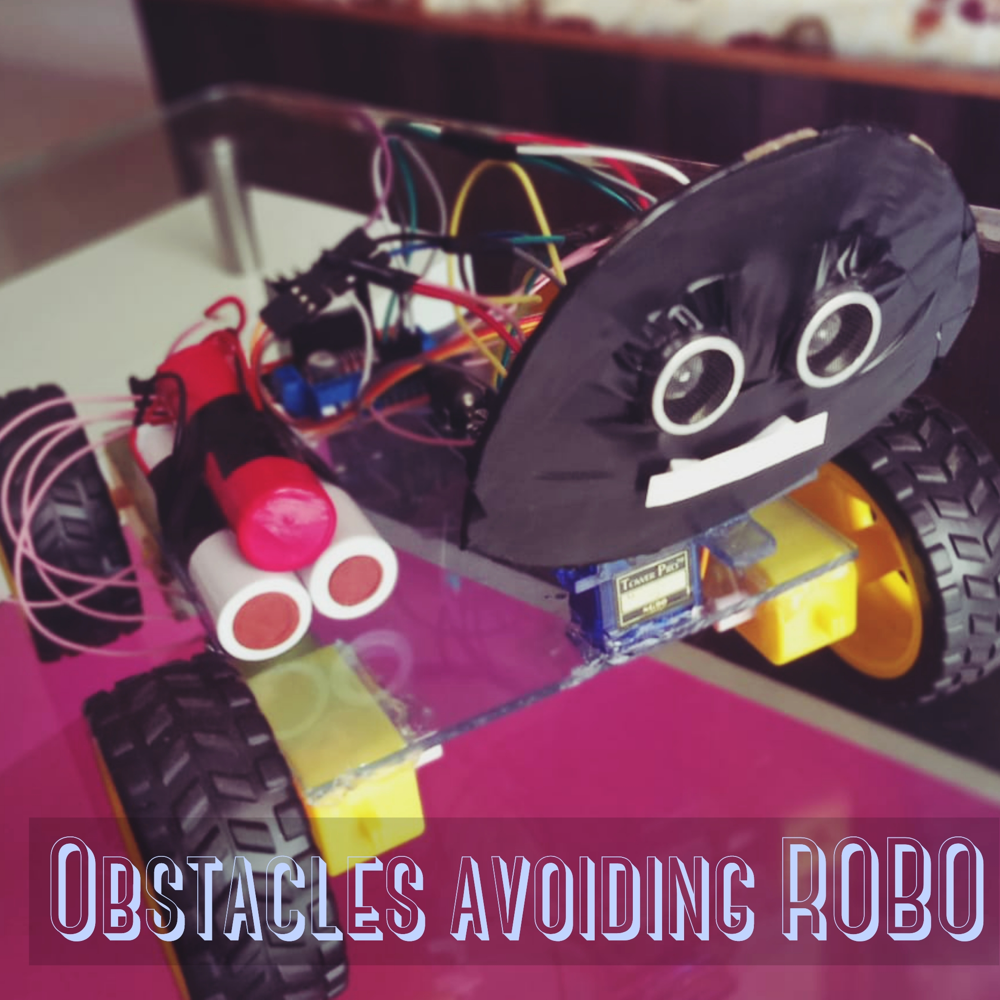
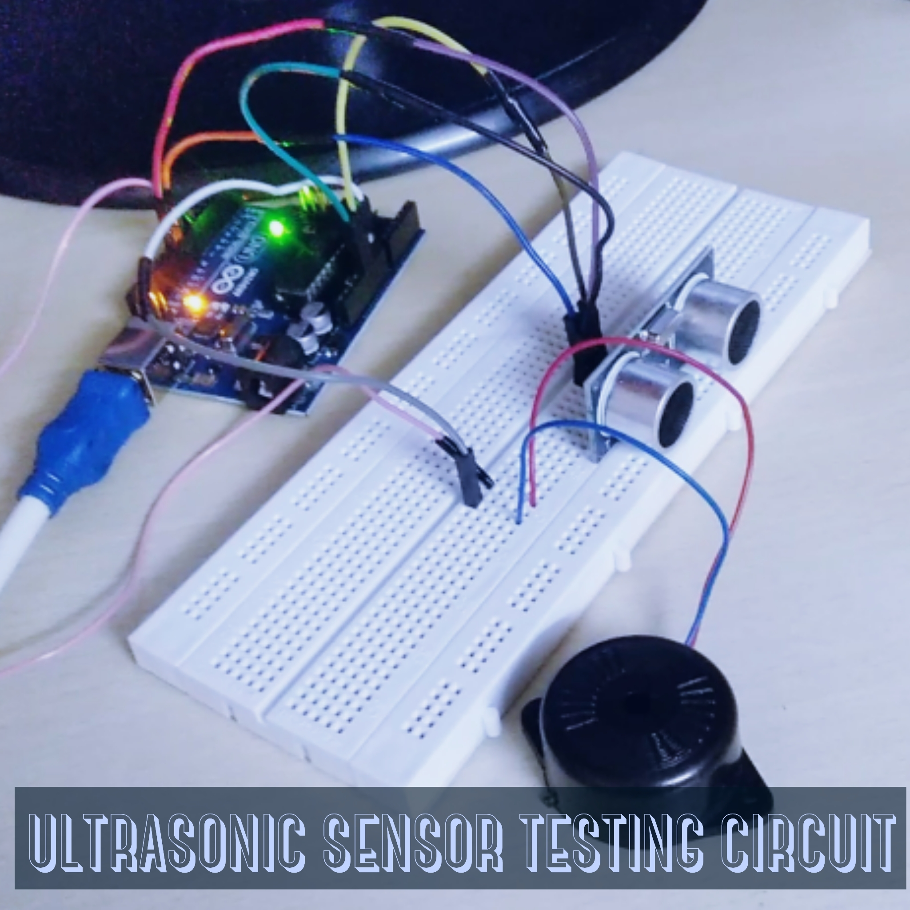
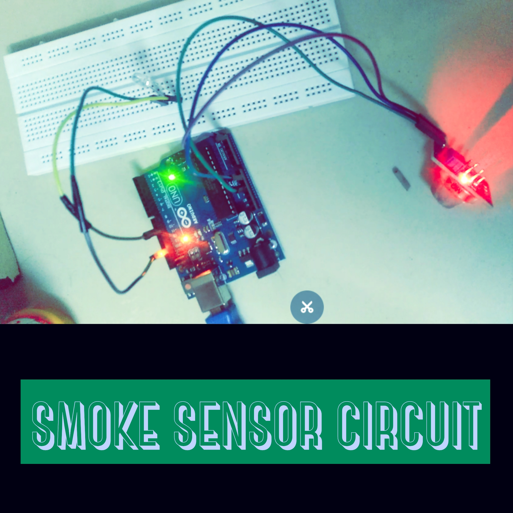

Hardware Projects

Tech Assistant For Blind Person
Details :
OWe have three buttons mounted on our Glasses for different tasks .By using First buttton we are able to read text whihc is written on any page or whatever , by using second button we are able to detect objects in front of us and by using third button we are able to identify faces like our family members or any unknown person in front of us .Components used :
Raspberry PI 4B+, Ultrasonic Sensor , Rpi Camera , Ear phones.
Hand Gesture Controlling Wheel Chair
Details :
This wheelchair is designed for the disabled who depend on others for helping them go from one place to another. This project helps them move on wheelchairs from one place to another without the help of anyone. They can control the wheel chair simply using hand gestures.The Arduino uno controls the motors of the wheelchair and the Arduino nano is attached with the MPU6050 used to detect movement of the hand the data is wirelessly sent using RF transreceiver to the uno which responds according to the hand movement.Components used :
Arduino Uno , Arduino Nano , RF Tranreciever , ADXL Accelarometer , Motor Driver .


Obstcles Avoiding Robot
Details :
Obstacle Avoiding Robot is an intelligent device which can automatically sense the obstacle in front of it and avoid them by turning itself in another direction .The application of Obstacle Avoiding robot is not limited and it is used in most of the military organization now which helps carry out many risky jobs that cannot be done by any soldiers.Components used :
Arduino Uno , L2983D Motor Driver , Ultrasonic sensor .
Smart Trolley
Details :
By using RFID technology we are able to scan multiple items at a given time . Reducing the total time taken by any person during checkout . Reducing the time spent during the wait in the queue at the billing counter.FTDI makes it super easy to convert a USB signal to the UART signal understood by the microcontrollers . STM32 - Largest flash memory double than arduino . Ram is 10 times bigger than Arduino .Components used :
STM32 , EM-18 RFID Reader Module , 16X2 LCD , FTDI Module(USB to TTL Converter ) .


Weather Station
Details :
It is a type of instrument that collects weather related data through sensors that it is connected to . It shows the information in terms of weather , Humidity and temperature .Components used :
RaspberryPi Pico , 16X2 LCD , BME280 Sensor , Programming Language : Python .
Ultrasonic Sensor Test
Details :
Ultrasonic sensors work by emitting sound waves at a frequency too high for humans to hear. They then wait for the sound to be reflected back, calculating distance based on the time required. This is similar to how radar measures the time it takes a radio wave to return after hitting an object.Components used :
Arduino Uno , Buzzer , Ultrasonic sensor .


Obstcles Avoiding Robot
Details :
The MQ6 sensor is the main sensing component which is used in a gas detection appliance. The sensor consist of a sensing material which ionize the gases which comes in its contact. As a result, the ionization process of the gases changes the resistance across the circuit.Components used :
Arduino Uno , MQ6 Sensor , Buzzer, LED.